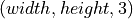
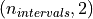
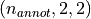
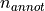
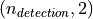
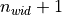
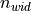

visiannot.visiannot.ViSiAnnoT¶
Module defining ViSiAnnoT
Summary¶
Classes¶
Class defining the visualization and annotation GUI for a set of synchronized video(s) and signal(s). |
API¶
Class ViSiAnnoT¶
Methods for plotting region items (pyqtgraph.LinearRegionItem):
|
Displays items in the signal widgets |
|
Creates a region item (pyqtgraph.LinearRegionItem) and displays it in a widget |
|
Creates and displays a region item (pyqtgraph.LinearRegionItem) for the progress bar ( |
|
Adds a text item to the signal widgets ( |
|
Plots intervals data as a region |
|
Removes an item from a list of widgets |
|
Removes a region item from the progress bar widget and the signal widgets |
Methods for managing event annotations:
Adds an event annotation to the current label |
|
|
Displays a region in the progress bar and the signal widgets |
|
Callback method managing events annotation with push buttons |
Callback method for changing event annotation label with the radio buttons |
|
|
Changes event annotation label (loads new annotation file) |
|
Deletes a specific annotation for the current label |
|
Deletes an annotion that is clicked with mouse |
|
Creates and displays text items in signal widgets with the description of the event annotation that has been clicked on |
|
Gets the path of the annotation files corresponding to the input label |
|
Looks for the index of the annotation at the given position (for the current label) |
Resets the annotations value for the current label |
|
|
Sets an annotation value for the current label, either start or end timestamp of the event annotation |
Mananges the display of events annotation (on/off) |
|
Clears the display of all the descriptions of events annotation |
|
Clears the display of events annotation for all labels (but does not delete the annotations) |
|
|
Clears the display of events annotation for a specific label |
|
Class method for deleting a line in a txt file |
Plots events annotations, either only for the current label, or for all lables (depending on the check box “Display all labels”) |
Methods for managing image annotations:
Callback method for saving an annotated image |
Callback methods for fast navigation:
|
Callback method for selecting a pre-defined temporal range that begins at the current temporal cursor position |
|
Callback method for selecting a part of the video/signal defined by |
Callback method to set |
|
Callback method to set the temporal range ( |
Miscellaneous methods:
|
Converts milliseconds to frame number sampled at the reference frequency |
Converts the current temporal range defined by |
|
|
Converts a frame number to milliseconds |
Gets the string associated to the truncated temporal intervals defined by |
|
|
Sets the ticks of the X axis of the widget and the X axis range according to a temporal range |
Methods for creating widgets:
|
Creates a widget with the events annotation tool and adds it to the layout |
|
Creates a widget with the image annotation tool and adds to the layout |
|
Creates a widget with the progress bar and adds it to the layout |
|
Creates a widget for defining a custom temporal interval and adds it to the layout |
Methods for mouse interaction with plots (mostly callback methods):
|
Sets the current frame |
|
Callback method for mouse dragging of the temporal cursor in a signal widget |
Gets the position of the mouse on the X axis |
|
Gets position of the mouse on the Y axis of all the signal widgets |
|
Callback method for mouse dragging of the navigation point in the progress bar widget |
|
Callback method for managing mouse click on the signal widgets ( |
|
|
Manages mouse click for zoom or annotation |
Methods for setting video and signal data:
|
Gets signal data after synchronization with video |
|
Gets the file name and the start second in a line of a temporary synchronization file (in case signal is not synchronized with video) |
|
Sets video and signal data (to be called before plotting) |
Methods for displaying video / plotting signals and progress bar:
|
Gets video frame at the current frame |
|
Creates the signal widgets and initializes the signal plots |
|
Creates the video widgets and initializes the video plots |
Updates the displayed video frame and the plots of the temporal cursor at the current frame position |
|
Closes streams (elements of |
|
|
Sets the value of current frame |
Updates (during playback) the displayed video frame and the plots of the temporal cursor at the current frame |
|
Updates the title of the progress bar |
|
|
Updates the signal plots so that it spans the current temporal range defined by |
Reads the video stream (launched in a thread) |
Callback method for key press interaction:
|
Callback method for key press interaction |
|
Callback method for key release interaction |
Callback methods for zooming in/out:
|
Callback method for resetting the temporal range (defined by |
|
Callback method for zooming in |
|
Callback method for zooming out |
Attributes:
(int) Number of temporal ticks on the X axis of the signals plots |
|
(str) Time zone (as in package pytz) |
|
(int) Maximum signal frequency to plot |
|
(int) Maximum number of points to plot for the signals |
|
(list) Default plot styles for signals on a single widget (length 10) |
|
(list) Data types (string) for signal widget |
|
(bool) Specify if |
|
(int) ID of the current video/signal file in case of long recordings |
|
(int) Number of files in case of long recordings |
|
(dict) Key is the camera ID, value is an instance of cv2.VideoCapture containing the video data |
|
(list) Each element corresponds to a signal widget and is a list of instances of |
|
(dict) Intervals to plot on signals, each item corresponds to one signal widget |
|
(int) Frequency of the video (or the first signal if there is no video), it is the reference frequency |
|
(int) Number of frames in the video (or the first signal if there is no video) |
|
(datetime.datetime) Beginning datetime of the video (or the first signal if there is no video) |
|
(dict) Thresholds to plot on signals widgets |
|
(str) Base name of the annotation files |
|
(str) Directory where the annotations are saved |
|
(str) Label automatically created for getting duration of video files (or first signal if no video) |
|
(list) Labels of the event annotation (string) |
|
(list) Colors of the event annotation labels |
|
(numpy array) Array with unsaved annotated events |
|
(dict) Event annotations descriptions to be displayed |
|
(list) Way of storing event annotations |
|
(list) Files names of event annotation |
|
(int) Index of the currently selected label, with respect to the list |
|
(list) Image annotation labels (strings) |
|
(int) Zoom factor |
|
(int) Start position (frame number) for custom manual zoom (set to -1 if not defined) |
|
(int) End position (frame number) for custom manual zoom (set to -1 if not defined) |
|
(list) Instances of pyqtgraph.LinearRegionItem with all the grey regions for custom manual zoom |
|
(list) Instances of pyqtgraph.TextItem with the duration of the custom manual zoom |
|
(int) Number of frames correpsonding to |
|
(list) Duration of file split (tool for fast navigation), 2 elements (int): |
|
(int) Number of splits in the file (tool for fast navigation) |
|
(list) Temporal range durations intervals starting at the current position of the temporal cursor (tool for fast navigation) |
|
(bool) Specify if the video is paused |
|
(int) Index of the current frame |
|
(int) First frame that is displayed in the signal plots |
|
(int) Last frame that is displayed in the signal plots |
|
(bool) Specify if the window is running |
|
(QtWidgets.QApplication) GUI initializer |
|
(QtWidgets.QWidget) Window container |
|
(QtWidgets.QGridLayout) layout filling the window |
|
( |
|
( |
|
(dict) Video widgets |
|
(dict) Image items of the current frame |
|
(dict) Image arrays of the current frame |
|
(dict) Files names of the video |
|
(list) Widgets for signal plot, each element is an instance of |
|
(list) Plot items of the signals |
|
(list) Temporal cursor item for each signal |
|
(dict) Lists of region items for temporal intervals |
|
( |
|
(QtWidgets.QDateTimeEdit) Editor of starting datetime of custom temporal interval |
|
(QtWidgets.QPushButton) Push button for defining the starting datetime of custom temporal interval as the current frame |
|
(QtWidgets.QTimeEdit) Editor of the duration of custom temporal interval |
|
(QtWidgets.QPushButton) Push button for validating custom temporal interval |
|
( |
|
(pyqtgraph.PlotWidget) Widget with the visibility image |
|
(pyqtgraph.PlotWidget) Widget containing the zoomin image |
|
(pyqtgraph.PlotWidget) Widget containing the zoomout image |
|
(QtWidgets.QButtonGroup) Set of the radio buttons with labels of events annotation |
|
(QtWidgets.QButtonGroup) Set of the radio buttons with display options of events annotation |
|
(QtWidgets.QButtonGroup) Set of the check boxes for custom display of events annotation |
|
(QtWidgets.QButtonGroup) Set of push buttons for events annotation (Sart, Stop, Add, Delete last, Display) |
|
(list) Instances of QtWidgets.QLabel containing the text next to the push buttons grouped in |
|
(dict) Lists of region items (pyqtgraph.LinearRegionItem) for the display of event annotations |
|
(QtWidgets.QButtonGroup) Set of radio buttons with labels of image extraction |
|
( |
|
(threading.Thread) Thread for getting video frames, connected to the method |
|
(QtCore.QTimer) Thread for updating the current frame position, connected to the method |
-
class
visiannot.visiannot.ViSiAnnoT.ViSiAnnoT(video_dict, signal_dict, annotevent_dict={}, annotimage_list=[], threshold_dict={}, interval_dict={}, y_range_dict={}, poswid_dict={}, layout_mode=1, trunc_duration=(0, 0), flag_long_rec=False, from_cursor_list=[], zoom_factor=2, nb_ticks=10, annot_dir_base='Annotations', down_freq=500, flag_pause_status=False, max_points=5000, time_zone='Europe/Paris', flag_infinite_loop=True, bg_color=(244, 244, 244), bg_color_plot=(255, 255, 255), font_name='Times', font_size=12, font_size_title=16, font_color=(0, 0, 0), ticks_color=(93, 91, 89), ticks_size=12, ticks_offset=5, nb_table_annot=5, height_widget_signal=150)[source]¶ Bases:
objectClass defining the visualization and annotation GUI for a set of synchronized video(s) and signal(s).
The constructor takes as arguments dictionaries with the path to the video files and signal files. It calls the method
setAllData()in order to load data and store them in attributes.For a given video file, data are loaded in an instance of cv2.VideoCapture. The set of video data is stored in
video_data_dict. The set of widgets for plotting video is stored inwid_vid_dict. The set of current video frames is stored inim_dict. For plotting, the video frames are converted to instances of pyqtgraph.ImageItem which are stored inimg_vid_dict.For a given signal file, data are loaded in an instance of
Signal. The supported formats are txt, mat, h5 and wav. The set ofSignalinstances is stored insig_list_list. The set of widgets for plotting signals is stored inwid_data_list. A temporal cursor (instance of pyqtgraph.InfiniteLine) is plotted on each signal widget and is synchronized with the video playback. The set of temporal cursors is stored incurrent_cursor_list.The reference frequency
ViSiAnnoT.fpsis defined as the video frequency. If there is no video to display,ViSiAnnoT.fpsis defined as the frequency of the first signal to plot. The playback speed (both video and signal temporal cursor) is at the reference frequency.The video display is initialized by the method
initVideoPlot(). The signal display is initialized by the methodinitSignalPlot().The temporal range is defined by
first_frameandlast_frame(sampled atViSiAnnoT.fps). The signal widgets display the signal between those bounds. So when zooming in/out, the temporal range is modified and then the display is updated with the methodupdateSignalPlot().The playback is managed with two separate threads:
Reading next video frame - an instance of threading.Thread with the method
updateVideoFrame()as target,Updating plot - an instance of QtCore.QTimer connected to the method
updatePlot().
The current position in the video file (i.e. the current position of the temporal cursor) is
frame_id(sampled atViSiAnnoT.fps).- Parameters
video_dict (dict) –
video configuration, each item corresponds to one camera. Key is the camera ID (string). Value is a configuration list with 4 elements:
(str) Path to the video file,
(str) Delimiter to get beginning datetime in the video file name,
(int) Position of the beginning datetime in the video file name, according to the delimiter,
(str) Format of the beginning datetime in the video file name (either
"posix"or a format compliant withdatetime.strptime()).
signal_dict (dict) –
signal configuration, each item corresponds to one signal widget. Key is the widget ID (Y axis label, string). Value is a nested list of signal configurations. Each element of the nested list corresponds to one signal plot and is a configuration list of 7 elements:
(str) Path to the signal file, data must be stored in a 1D array if regularly sampled, otherwise in a 2D array (where first column is the timestamp in milliseconds and the second column the signal value)
(str) Key to access the data (in case of .mat or .h5 file),
(int or float or str) Signal frequency, set it to
0if signal non regularly sampled, set it to-1if same frequency asViSiAnnoT.fps, it may be a string with the path to the frequency attribute in a .h5 file,(str) Delimiter to get beginning datetime in the signal file name,
(int) Position of the beginning datetime in the signal file name, according to the delimiter,
(str) Format of the beginning datetime in the signal file name (either
"posix"or a format compliant withdatetime.strptime()),(dict) Plot style, see https://pyqtgraph.readthedocs.io/en/latest/graphicsItems/plotdataitem.html for details, set it to
Nonefor default.
Here is an example:
{ "sig_1": [ [ "folder1/file1.txt", "", 50, '_', 1, "%Y-%m-%dT%H-%M-%S", None ] ], "sig_2": [ [ "folder1/file2.h5", "key2", 0, '_', 0, "posix", {'pen': {'color': 'm', 'width': 1} ], ["folder3/file3.mat", "key3", -1, '_', 0, "posix", None] ] }
In case of audio signal to plot, the configuration list is slightly different. The second element (key to access data) is a string to specify which channel to plot. It must contain
"left"or"right", whatever the letter capitalization is. Otherwise, by default the left channel is plotted. Moreover, the frequency is directly retrieved from the wav file, so the third element of the configuration list (signal frequency) is ignored.Here is an example for audio:
{ "Audio L": [ [ "path/to/audio.wav", "Left channel", 0, '_', 1, "%Y-%m-%dT%H-%M-%S", None ] ], "Audio R": [ [ "path/to/audio.wav", "Right channel", 0, '_', 1, "%Y-%m-%dT%H-%M-%S", None ] ] }
annotevent_dict (dict) – events annotation configuration. Key is the label (string). Value is the associated color (RGBA).
annotimage_list (list) – labels for image extraction
threshold_dict (dict) –
threshold configuration. Each item corresponds to a signal widget on which to plot threshold(s). The key must be the same as in
signal_dict. Value is a list of configuration lists. This is a nested list because there can be several thresholds plotted in the same widget. A configuration list has 2 elements:(int or float) Threshold value on Y axis,
(tuple or list or str) Plot color in (RGB) format or HEX color string.
interval_dict (dict) –
interval configuration. Each item corresponds to a signal widget on which to plot intervals. The key must be the same as in
signal_dict. Value is a nested list of interval configurations. Each element of the nested list corresponds to one type of interval to be plotted on the same signal widget and is a configuration list of 7 elements:(str) Path to the interval file, data can be stored as a 2D array (where each line has 2 elements: start and stop frames) or a 1D array (time series of 0 and 1),
(str) Key to access the data (in case of .mat or .h5 file),
(int) Signal frequency, set it to
-1if same frequency asViSiAnnoT.fps, it may be a string with the path to the frequency attribute in a .h5 file,(str) Delimiter to get beginning datetime in the interval file name,
(int) Position of the beginning datetime in the interval file name, according to the delimiter,
(str) Format of the beginning datetime in the interval file name (either
"posix"or a format compliant withdatetime.strptime()),(tuple or list) Plot color (RGBA).
y_range_dict (dict) – visible Y range for signal widgets, each item corresponds to a signal widget. The key must be the same as in
signal_dict. Value is a list/tuple of length 2 with the min and max values to display on the Y axis. The signal widgets that are not specified in this dictionary have auto-range enabled for Y axis.poswid_dict (dict) –
custom position of the widgets in the window to use the positions defined by the layout mode (see input
layout_mode). Value is a tuple of length 2(row, col)or 4(row, col, rowspan, colspan). Key identifies the widget:"logo""select_trunc""select_manual""select_from_cursor""annot_event""annot_image""visi""zoomin""zoomout""progress"
layout_mode (int) –
layout mode of the window for positioning the widgets, one of the following:
1(focus on video, works better with a big screen),2(focus on signal, suitable for a laptop screen),3(compact display with some features disabled).
trunc_duration (list) – (tool for fast navigation) duration
(min, sec)to be used for splitting video/file in the combo box of temporal range selection. For example, for a video of 30 minutes,trunc_duration=(10, 0)will provide 3 temporal ranges in the combo box: from 0 to 10 minutes, from 10 to 20 minutes and from 20 to 30 minutes.flag_long_rec (bool) – specify if
ViSiAnnoTis launched in the context ofViSiAnnoTLongRec(long recording)from_cursor_list (list) – (tool for fast navigation) list of durations that are available in the combo box to select a temporal range duration in order to display a new temporal range that will begin at the current position of the temporal cursor. Each element is a tuple of length 2
(min, sec). An example:[[0,30],[1,0],[2,0],[3,0],[4,0],[5,0]].zoom_factor (int) – zoom factor
nb_ticks (int) – number of temporal ticks on the X axis of the signals widgets
annot_dir_base (str) – base directory where to save annotations, a sub-directory is automatically created for the recording
down_freq (int) – maximum signal frequency to plot, if a signal has a frequency strictly higher than
down_freq, then the signal is downsampled todown_freqflag_pause_status (bool) – specify if the video is paused when launching
ViSiAnnoTmax_points (int) – maximum number of points to plot for the signals
time_zone (str) – time zone (compliant package pytz)
flag_infinite_loop (bool) – specify if an infinite loop is set after creating the window. Set it to
Falseif severalViSiAnnoTwindows must be displayed simultaneousely, do not forget to store each instance ofViSiAnnoTin a variable and to set manually the infinite loop withgraphicsoverlayer.ToolsPyQt.infiniteLoopDisplay()bg_color (tuple or str) – backgroud color of the GUI, RGB or HEX string
bg_color_plot (tuple or str) – background color of the signal plots, RGB or HEX string
font_name (str) – font used for the text in the GUI (must be available in PyQt5)
font_size (int) – font size of the text in the GUI
font_size_title (int) – font size of the titles in the GUI (progress bar and video widgets)
font_color (tuple) – font color of the text in the GUI, RGB
ticks_color (tuple or str) – color of the ticks in the signal plots, RGB or HEX string
ticks_size (int) – size of the ticks values in the signal plots
ticks_offset (int) – offset between the ticks and associated values in the signal plots
nb_table_annot (int) – maximum number of labels in a row in the widgets for event annotation and image annotation
height_widget_signal (int) – minimum height in pixel of the signal widgets
- Author
Raphael Weber
-
addItemToSignals(item_list)[source]¶ Displays items in the signal widgets
- Parameters
item_list (list) – items to display in the signal widgets, same length as
wid_data_list, each element corresponds to one signal widget
-
static
addRegionToWidget(bound_1, bound_2, wid, color)[source]¶ Creates a region item (pyqtgraph.LinearRegionItem) and displays it in a widget
- Parameters
bound_1 (int) – start value of the region item (expressed as a coordinate in the X axis of the widget)
bound_2 (int) – end value of the region item (expressed as a coordinate in the X axis of the widget)
wid (pyqtgraph.PlotWidget) – widget where to display the region item, might be any widget class with a method
addItemcolor (tuple or list) – plot color (RGBA)
- Returns
region item displayed in the widget
- Return type
pyqtgraph.LinearRegionItem
- Author
Raphael Weber
-
addRegionToWidgets(bound_1, bound_2, color=(150, 150, 150, 50))[source]¶ Creates and displays a region item (pyqtgraph.LinearRegionItem) for the progress bar (
wid_progress) and the signal widgets (wid_data_list)- Parameters
bound_1 (int) – start frame of the region item (sampled at the reference frequency
ViSiAnnoT.fps)bound_2 (int) – end frame of the region item (sampled at the reference frequency
ViSiAnnoT.fps)color (tuple or list) – plot color (RGBA)
- Returns
instances of pyqtgraph.LinearRegionItem (corresponding to the same region), first element displayed in the progress bar widget, remaining elements displayed in the widget signals
- Return type
list
- Author
Raphael Weber
-
annotEventAdd()[source]¶ Adds an event annotation to the current label
It writes in the annotation files (
annotevent_path_list).If the annotation start timestamp or end timestamp is not defined, then nothing happens.
- Author
Raphael Weber
-
annotEventAddRegion(bound_1, bound_2, **kwargs)[source]¶ Displays a region in the progress bar and the signal widgets
It converts the bounds to frame numbers and then calls the method
ViSiAnnoT.addRegionToWidgets().- Parameters
bound_1 (str) – start datetime of the region
bound_2 (str) – end datetime of the region
kwargs – keyword arguments of
ViSiAnnoT.addRegionToWidgets()
- Author
Raphael Weber
-
annotEventCallPushButton(button_id)[source]¶ Callback method managing events annotation with push buttons
Connected to the signal
buttonClicked[int]of the attribute attr:.annotevent_button_group_push.There are 5 buttons and they have an effect on the current label:
button_id == 0: set annotation beginning datetime at the current frameframe_idbutton_id == 1: set annotation ending datetime with the current frame :attr;`.frame_id`button_id == 2: add annotation defined by the current beginning and ending datetimesbutton_id == 3: delete last annotationbutton_id == 4: on/off display
- Parameters
button_id (int) – index of the button that has been pushed
- Author
Raphael Weber
-
annotEventCallRadio(ev)[source]¶ Callback method for changing event annotation label with the radio buttons
Connected to the signal
buttonClickedofannotevent_button_group_radio_label.It calls the method
annotEventChangeLabel()withev.text()as input.- Parameters
ev (QtWidgets.QRadioButton) – radio button that has been clicked
-
annotEventChangeLabel(new_label)[source]¶ Changes event annotation label (loads new annotation file)
It sets the value of the following attributes:
current_label_idwith the index of the new annotation label inannotevent_label_listannotevent_path_listwith the new list of annotation file paths (by callingannotEventGetPathList())
It also manages the display of the annotations.
- Parameters
new_label (str) – new annotation label
- Author
Raphael Weber
-
annotEventDelete(annot_id)[source]¶ Deletes a specific annotation for the current label
- Parameters
annot_id (int) – index of the annotation to delete
- Author
Raphael Weber
-
annotEventDeleteClicked(position)[source]¶ Deletes an annotion that is clicked with mouse
- Parameters
position (int) – frame number (sampled at the reference frequency
ViSiAnnoT.fps) corresponding to the mouse position on the X axis of the signal widgets- Author
Raphael Weber
-
annotEventDescription(ev, pos_frame, pos_ms)[source]¶ Creates and displays text items in signal widgets with the description of the event annotation that has been clicked on
- Parameters
ev (QtWidgets.QRadioButton) – radio button that has been clicked
pos_frame (int) – frame number (sampled at the reference frequency
ViSiAnnoT.fps) corresponding to the mouse position on the X axis of the signal widgetpos_ms (float) – mouse position on the X axis of the signal widget in milliseconds
- Author
Raphael Weber
-
annotEventGetPathList(label)[source]¶ Gets the path of the annotation files corresponding to the input label
- Parameters
label (str) – event annotation label
- Returns
paths of the annotation files, each element corresponds to an annotation type (see
annotevent_type_list)- Return type
list
- Author
Raphael Weber
-
annotEventIdFromPosition(position)[source]¶ Looks for the index of the annotation at the given position (for the current label)
- Parameters
position (int) – frame number (sampled at the reference frequency
ViSiAnnoT.fps)- Returns
index of the annotation (i.e. line number in the annotation file), returns
-1if no annotation atposition- Return type
int
- Author
Raphael Weber
-
annotEventResetTime()[source]¶ Resets the annotations value for the current label
It sets
ViSiAnnoT.annotevent_array[ViSiAnnoT.annotevent_current_label_id]to zeros.- Author
Raphael Weber
-
annotEventSetTime(frame_id, annot_position)[source]¶ Sets an annotation value for the current label, either start or end timestamp of the event annotation
It sets the values of
ViSiAnnoT.annotevent_array[ViSiAnnoT.current_label_id, annot_position].- Parameters
frame_id (int) – frame number of the annotation timestamp (sampled at the reference frequency
ViSiAnnoT.fps)annot_position (int) – specify if start timestamp (
0) or end timestamp (1)
- Author
Raphael Weber
-
annotImageCallPushButton()[source]¶ Callback method for saving an annotated image
Connected to the signal
clickedofannotimage_push_button.- Author
Raphael Weber
-
callComboFromCursor(ite_combo)[source]¶ Callback method for selecting a pre-defined temporal range that begins at the current temporal cursor position
Connected to the signal
currentIndexChangedof the attributecombo_from_cursor.It sets
first_frametoframe_idandlast_frameso that the temporal range spans the selected value of the combo boxcombo_from_cursor. Then it calls the methodupdateSignalPlot().- Parameters
ite_combo (int) – index of the selected value in the combo box
combo_from_cursor- Author
Raphael Weber
-
callComboTrunc(ite_trunc)[source]¶ Callback method for selecting a part of the video/signal defined by
trunc_durationvia the combo boxcombo_truncConnected to the signal
currentIndexChangedofcombo_trunc.It sets the temporal range (
first_frameandlast_frame) with the selected value in the combo box. The current frameframe_idis set to the newfirst_frame. Then it calls the methodupdateSignalPlot().- Parameters
ite_trunc (int) – index of the selected value in the combo box
combo_trunc- Author
Raphael Weber
-
clearAllAnnotEventDescriptions()[source]¶ Clears the display of all the descriptions of events annotation
- Author
Raphael Weber
-
clearAnnotEventRegions()[source]¶ Clears the display of events annotation for all labels (but does not delete the annotations)
- Author
Raphael Weber
-
clearAnnotEventRegionsSingleLabel(label_id)[source]¶ Clears the display of events annotation for a specific label
- Parameters
label_id (int) – index of the label in the list
ViSiAnnoT.annotevent_label_list- Author
Raphael Weber
-
convertMsToFrameRef(frame_ms)[source]¶ Converts milliseconds to frame number sampled at the reference frequency
ViSiAnnoT.fps- Parameters
frame_ms (float) – frame number in milliseconds
- Returns
frame number sampled at the reference frequency
ViSiAnnoT.fps- Return type
int
-
createTextItem(text, pos_ms, pos_y_list, text_color=(0, 0, 0), border_color=(255, 255, 255), border_width=3)[source]¶ Adds a text item to the signal widgets (
wid_data_list)See https://pyqtgraph.readthedocs.io/en/latest/functions.html#pyqtgraph.mkColor for supported color formats.
- Parameters
text (str) – text to display in the signal widgets (it is the same in each widget)
pos_ms (float) – temporal position (X axis) of the text item in milliseconds
pos_y_list (float) – position on the Y axis of the text item in each signal widget, same length as
wid_data_listtext_color (tuple or list or str) – color of the text
border_color (tuple or list or str) – color of the text item border
border_width (int) – width of the text item border in pixels
- Returns
instances of pyqtgraph.TextItem, each element corresponds to a signal widget, same length and order as
wid_data_list- Return type
list
- Author
Raphael Weber
-
createWidgetAnnotEvent(widget_position, nb_table=5)[source]¶ Creates a widget with the events annotation tool and adds it to the layout
ViSiAnnoT.layMake sure the attribute
annotevent_label_listis defined before calling this method.It sets the following attributes:
annotevent_button_group_push(must be initialized)annotevent_button_label_list(must be initialized)
- Parameters
widget_position (list or tuple) – position of the widget in the layout, length 2
(row, col)or 4(row, col, rowspan, colspan)- Author
Raphael Weber
-
createWidgetAnnotImage(widget_position, flag_horizontal=True, nb_table=5)[source]¶ Creates a widget with the image annotation tool and adds to the layout
ViSiAnnoT.layMake sure the attribute
annotimage_label_listis defined before calling this method.It sets the following attributes:
- Parameters
widget_position (list or tuple) – position of the widget in the layout, length 2
(row, col)or 4(row, col, rowspan, colspan)flag_horizontal (bool) – specify if radio buttons are horizontal
- Author
Raphael Weber
-
createWidgetProgress(widget_position, title=None, title_style={'color': '#000', 'size': '9pt'}, ticks_color='#000', ticks_size=9, ticks_offset=0)[source]¶ Creates a widget with the progress bar and adds it to the layout
ViSiAnnoT.layIt sets the attribute
wid_progress.- Parameters
widget_position (list or tuple) – position of the widget in the layout, length 2
(row, col)or 4(row, col, rowspan, colspan)title (str) – widget title
title_style (dict) – widget title style
ticks_color (str or tuple or list) – color of the ticks text, may be HEX string or (RGB)
ticks_size (float) – font size of the ticks text in pt
ticks_offset (int) – ticks text offset
- Author
Raphael Weber
-
createWidgetTimeEdit(widget_position)[source]¶ Creates a widget for defining a custom temporal interval and adds it to the layout
ViSiAnnoT.layA group box is added to the layout and the combo box is added to the group box.
It sets the following attributes:
- Parameters
widget_position (list or tuple) – position of the widget in the layout, length 2
(row, col)or 4(row, col, rowspan, colspan)- Author
Raphael Weber
-
currentCursorClicked(position)[source]¶ Sets the current frame
frame_idat the specified positionIf the specified position is out of bounds of the current temporal range defined by
first_frameandlast_frame, then the current frame is not set.- Parameters
position (int) – frame number (sampled at the reference frequency
ViSiAnnoT.fps)- Author
Raphael Weber
-
currentCursorDragged(cursor)[source]¶ Callback method for mouse dragging of the temporal cursor in a signal widget
It updates the current frame
frame_idat the current position of the temporal cursor.Connected to the signal
sigDraggedof the elements ofcurrent_cursor_list.- Parameters
cursor (pyqtgraph.InfiniteLine) – temporal cursor that is dragged
- Author
Raphael Weber
-
static
deleteLineInFile(path, line_id)[source]¶ Class method for deleting a line in a txt file
- Parameters
path (str) – path to the text file
line_id (int) – number of the line to delete (zero-indexed)
- Author
Raphael Weber
-
getCurrentRangeInMs()[source]¶ Converts the current temporal range defined by
ViSiAnnoT.first_frameandViSiAnnoT.last_frameto milliseconds- Returns
first_frame_ms (int) – first frame of the current temporal range in milliseconds
last_frame_ms (int) – last frame of the current temporal range in milliseconds
-
getDataSigTmp(path, type_data, key_data, freq_data, delimiter)[source]¶ Gets signal data after synchronization with video
- Parameters
path (str) – path to the temporary signal file
type_data (str) – data type (key of the dictionary
signal_dict, second positional argument ofViSiAnnoTconstructor)key_data (str) – key to access the data (in case of .h5 or .mat file)
freq_data (float) – signal frequency
delimiter (str) – delimiter used to split the lines of the temporary signal files
- Returns
signal data synchronized with video
- Return type
numpy array
- Author
Raphael Weber
-
static
getFileSigTmp(line, delimiter)[source]¶ Gets the file name and the start second in a line of a temporary synchronization file (in case signal is not synchronized with video)
- Parameters
line (str) – line containing the signal file name and start second
delimiter (str) – delimiter used to split the line between file name and start second
- Returns
path (str) – path to the signal file
start_sec (int) – start second
- Author
Raphael Weber
-
getFrameIdInMs(frame_id)[source]¶ Converts a frame number to milliseconds
- Parameters
frame_id (int) – frame number sampled at the reference frequency
ViSiAnnoT.fps- Returns
frame number in milliseconds
- Return type
float
-
getMouseTemporalPosition(ev)[source]¶ Gets the position of the mouse on the X axis
- Parameters
ev (QtGui.QMouseEvent) – emitted when the mouse is clicked/moved
- Returns
position_frame (int) – position of the mouse on the X axis in frame number (sampled at the reference frequency
ViSiAnnoT.fps),-1if the mouse clicked on a label item (most likely the widget title)position_ms (float) – position of the mouse on the X axis in milliseconds,
-1if the mouse clicked on a label item (most likely the widget title)
- Author
Raphael Weber
-
getMouseYPosition(ev)[source]¶ Gets position of the mouse on the Y axis of all the signal widgets
- Parameters
ev (QtGui.QMouseEvent) – emitted when the mouse is clicked/moved
- Returns
same length as
wid_data_list, each element is the position of the mouse on the Y axis in the corresponding signal widget, it returns[]if the mouse clicked on a label item (most likely the widget title)- Return type
list
- Author
Raphael Weber
-
getTruncIntervals()[source]¶ Gets the string associated to the truncated temporal intervals defined by
ViSiAnnoT.trunc_durationfor fast navigation- Returns
list of strings
- Return type
list
- Author
Raphael Weber
-
getVideoData(data_video)[source]¶ Gets video frame at the current frame
frame_id- Parameters
data_video (cv2.VideoCapture) – video data to read
- Returns
RGB image of the current frame, shape 
- Return type
numpy array
- Author
Raphael Weber
-
initSignalPlot(progbar_wid_pos, font_axis_label={'color': '#000', 'font-size': '12pt'}, ticks_color=(93, 91, 89), ticks_size=10, ticks_offset=2, current_cursor_style={'color': 'F00', 'width': 1}, current_cursor_dragged_style={'color': 'F0F', 'width': 2}, y_range_dict={}, height_widget_signal=150)[source]¶ Creates the signal widgets and initializes the signal plots
The widgets are automatically positioned below the progress bar.
It sets the following attributes:
Make sure the attributes
ViSiAnnoT.lay,ViSiAnnoT.sig_list_list,ViSiAnnoT.sig_labels,ViSiAnnoT.threshold_dictandViSiAnnoT.interval_dictare defined before calling this method.- Parameters
progbar_wid_pos (tuple of list) – position of the progress bar widget, length 2
(row, col)or 4(row, col, rowspan, colspan)font_axis_label (dict) – font of the Y axis label
ticks_color (tuple or list) – ticks color (RGB)
ticks_size (int) – size of the ticks text
ticks_offset (int) – offset between the ticks and the text
current_cursor_style (dict) – plot style of the temporal cursor
current_cursor_dragged_style (dict) – plot style of the temporal cursor when dragged
y_range_dict (dict) – visible Y range for signal widgets, see positional argument
y_range_dictofViSiAnnoTconstructorheight_widget_signal (int) – minimum height in pixels of the signal widgets
- Author
Raphael Weber
-
initVideoPlot(video_dict, poswid_dict, font_title={'color': '#000', 'size': '12pt'})[source]¶ Creates the video widgets and initializes the video plots
It sets the following attributes:
Make sure the attribute
ViSiAnnoT.layis created before calling this method.
-
keyPress(ev)[source]¶ Callback method for key press interaction
Space: play/pause video playback
Left: rewind 1 second (1 minute if ctrl key pressed as well)
Right: forward 1 second (1 minute if ctrl key pressed as well)
Down: rewind 10 seconds (10 minutes if ctrl key pressed as well)
Up: forward 10 seconds (10 minutes if ctrl key pressed as well)
l: rewind 1 frame
m: forward 1 frame
Home: set the current frame
ViSiAnnoT.frame_idto 0End: set the current frame
ViSiAnnoT.frame_idtoViSiAnnoT.nframes-1i: zoom in (
ViSiAnnoT.zoomIn()is called)o: zoom out (
ViSiAnnoT.zoomOut()is called)n: set the temporal range to the fullest
a: define start datetime of events annotation
z: define end datetime of events annotation
e: add events annotation
s: display events annotations
Page down: load previous file in case of long recordings (
ViSiAnnoT.flag_long_recisTrue)Page up: load next file in case of long recordings (
ViSiAnnoT.flag_long_recisTrue)d + ctrl + shift: clear the display of all events annotation descriptions
- Parameters
ev (QtGui.QKeyEvent) – emmited when a key is pressed
- Author
Raphael Weber
-
keyRelease(ev)[source]¶ Callback method for key release interaction
Alt: show/hide menu bar
- Parameters
ev (QtGui.QKeyEvent) – emmited when a key is released
- Author
Raphael Weber
-
mouseDraggedProgress()[source]¶ Callback method for mouse dragging of the navigation point in the progress bar widget
wid_progressIt updates the current frame
frame_idat the current position defined by the mouse in the progress bar widget.Connected to the signal
sigPlotChangedof the scatter plot item ofwid_progress(accessed with the methodgraphicsoverlayer.ToolsPyqtgraph.ProgressWidget.getProgressPlot()).- Author
Raphael Weber
-
plotAnnotEventRegions()[source]¶ Plots events annotations, either only for the current label, or for all lables (depending on the check box “Display all labels”)
Make sure that the attribute
region_annotation_dictis already created.It checks if the display mode is on before plotting.
Connected to the signal
buttonClickedofannotevent_button_group_radio_dispandannotevent_button_group_check_custom.- Author
Raphael Weber
-
plotFrameIdPosition()[source]¶ Updates the displayed video frame and the plots of the temporal cursor at the current frame position
frame_idIf
frame_idis out of the temporal range (defined byfirst_frameandlast_frame), then the temporal range is updated. For example, in the context of long recording, this might happen when navigating from one file to another. If the temporal range is updated, then the methodupdateSignalPlot()is called in order to update the signal plots with the new temporal range.The attribute
img_vid_dictis set with the values inim_dictin order to update the displayed video frame.If the navigation point of the progress bar is not dragged, then the attribute
wid_progressis modified in order to update the position of the navigation point.The attribute
current_cursor_listis set in order to update the position of the temporal cursor in the signal widgets.- Author
Raphael Weber
-
static
plotIntervals(data_interval, wid, freq, color)[source]¶ Plots intervals data as a region
- Parameters
data_interval (numpy array) –
intervals to be displayed, shape , each line is an interval with start frame and end frame (sampled at
freq, relatively toViSAnnoT.beginning_datetimeif used insideViSiAnnoT) ; the intervals might be expressed in milliseconds, thenfreqmust be set to0WARNING: test this feature in asynchronous long recording (because of relative to
ViSAnnoT.beginning_datetime)wid (pyqtgraph.PlotWidget) – widget where to plot intervals, might be any widget class with a method
addItemfreq (float) – sampling frequency of intervals frames, set it to
0if intervals expressed in millisecondscolor (tuple or list) – plot color (RGBA)
- Returns
instances of pyqtgraph.LinearRegionItem
- Return type
list
- Author
Raphael Weber
-
static
removeItemInWidgets(wid_list, item_list)[source]¶ Removes an item from a list of widgets
- Parameters
wid_list (list) – widgets where to remove an item, each element must have a method
removeItem(for example an instance of pyqtgraph.PlotWidget)item_list (list) – items to remove from widgets, same length as
wid_list, each element corresponds to one element ofwid_list
-
removeRegionInWidgets(region_list)[source]¶ Removes a region item from the progress bar widget and the signal widgets
- Parameters
region_list (list) – instances of pyqtgraph.LinearRegionItem, all elements correspond to the same region displayed in the different widgets, first element is the region item displayed in the progress bar widget (
wid_progress) and the remaining elements are the region items displayed in the signal widgets (same order aswid_data_list)
-
setAllData(video_dict, signal_dict, interval_dict)[source]¶ Sets video and signal data (to be called before plotting)
Make sure the following attributes are defined before calling this method:
Make sure the follwing attributes are initialized before calling this method (it can be empty):
Otherwise the video thread throws a RunTime error. These attributes are then set thanks to the positional arguments
video_dictandsignal_dict.This method sets the following attributes:
If there is no video, the attributes
nframes,ViSiAnnoT.fpsandbeginning_datetimeare set with the first signal insignal_dict.It raises an exception if 2 videos do not have the same FPS or have a temporal shift of more than 1 second.
-
setTemporalTicks(widget, temporal_info)[source]¶ Sets the ticks of the X axis of the widget and the X axis range according to a temporal range
It creates temporal labels for ticks in the format HH:MM:SS.SSS. The number of ticks is specified by
ViSiAnnoT.nb_ticks.- Parameters
widget (pyqtgraph.PlotWidget) – widget where to set X axis ticks and X axis range, it may be any sub-class of pyqtgraph.PlotWidget, such as
graphicsoverlayer.ToolsPyqtgraph.SignalWidgetorgraphicsoverlayer.ToolsPyqtgraph.ProgressWidgettemporal_info (list) –
temporal range, there are two ways to specify it:
(first_frame_ms, last_frame_ms), the temporal range is expressed in milliseconds,(first_frame, last_frame, freq), the temporal range is expressed in number of frames sampled at the frequencyfreq
- Author
Raphael Weber
-
signalMouseClicked(ev)[source]¶ Callback method for managing mouse click on the signal widgets (
wid_data_list)Connected to the signal
sigMouseClickedof the elements ofwid_data_list.On one hand, it allows to define manually a temporal interval on which to zoom by calling the method
zoomOrAnnotClicked().On the other hand, it allows to define a new annotation and to add it the annotation file by calling the method
zoomOrAnnotClicked(). Also, it allows to delete manually a specific annotation by calling the methodannotEventDeleteClicked().It also updates the position of the temporal cursor by calling the method
currentCursorClicked().- Parameters
ev (QtGui.QMouseEvent) – emitted when the mouse is clicked/moved
- Author
Raphael Weber
-
stopProcessing()[source]¶ Closes streams (elements of
video_data_dict) and deletes temporary signal folderIt sets the value of
flag_processingtoFalseso that the threadupdate_frame_threadis stopped.- Author
Raphael Weber
-
timeEditCurrent()[source]¶ Callback method to set
ViSiAnnoT.edit_startto the current frameViSiAnnoT.frame_idConnected to the signal
clickedofViSiAnnoT.current_push.- Author
Raphael Weber
-
timeEditOk()[source]¶ Callback method to set the temporal range (
first_frameandlast_frame) to the custom temporal range (manually defined withedit_durationandedit_start)If
edit_durationis 0, then the current temporal range duration is kept.Connected to the signal
clickedoftime_edit_push.- Author
Raphael Weber
-
updateFrameId(frame_id)[source]¶ Sets the value of current frame
frame_idand updates the displayed video frame and the plots of the temporal cursor at new current frameThe displayed video frame and the plots are updated by calling the method
plotFrameIdPosition().- Parameters
frame_id (int) – new current frame index
- Author
Raphael Weber
-
updatePlot()[source]¶ Updates (during playback) the displayed video frame and the plots of the temporal cursor at the current frame
frame_idIt is called by the thread
timer.The displayed video frame and the plots are updated by calling the method
plotFrameIdPosition().It is only effective if
flag_pause_statusisFalse.It increments the value of
frame_id.- Author
Raphael Weber
-
updateProgressBarTitle()[source]¶ Updates the title of the progress bar
wid_progresswith the values of the current temporal range defined byfirst_frameandlast_frame- Author
Raphael Weber
-
updateSignalPlot(flag_reset_combo_trunc=True, flag_reset_combo_from_cursor=True)[source]¶ Updates the signal plots so that it spans the current temporal range defined by
first_frameandlast_frame- Parameters
flag_reset_combo_trunc (bool) – specify if the combo box
combo_truncmust be resetflag_reset_combo_from_cursor (bool) – specify if the combo box
combo_from_cursormust be reset
- Author
Raphael Weber
-
updateVideoFrame()[source]¶ Reads the video stream (launched in a thread)
Called by the thread
update_frame_thread.It updates the attribute
im_dictwith the image at the current frame.- Author
Raphael Weber
-
visiAll()[source]¶ Callback method for resetting the temporal range (defined by
first_frameandlast_frame) to the fullestConnected to the signal
sigMouseClickedof the scene attribute ofwid_visi.It sets
first_frameto0andlast_frametonframes. Then it calls the methodupdateSignalPlot().- Author
Raphael Weber
-
zoomIn()[source]¶ Callback method for zooming in
Connected to the signal
sigMouseClickedof the scene attribute ofwid_zoomin.- Author
Raphael Weber
-
zoomOrAnnotClicked(ev, pos_frame, pos_ms)[source]¶ Manages mouse click for zoom or annotation
- Parameters
ev (QtGui.QMouseEvent) – emitted when the mouse is clicked/moved
pos_frame (int) – mouse position on the X axis in frame number (sampled at the reference frequency
ViSiAnnoT.fps)pos_ms (int) – mouse position on the X axis in milliseconds
- Author
Raphael Weber
-
zoomOut()[source]¶ Callback method for zooming out
Connected to the signal
sigMouseClickedof the scene attribute ofwid_zoomout.- Author
Raphael Weber
-
annot_dir¶ (str) Directory where the annotations are saved
A sub-directory is automatically created: %s_annotations, where %s is the name of the first video file (or signal file if no video).
-
annot_file_base¶ (str) Base name of the annotation files
Label and annotation type is added when loading/saving annotation files)
-
annotevent_array¶ (numpy array) Array with unsaved annotated events
Shape , where  is the length of
ViSiAnnoT.annotevent_label_list. For a given label with indexninViSiAnnoT.annotevent_label_list, the sub-arrayself.annotevent_array[n]is organized as follows:start datetime string
start frame index in the format “rec-id_frame-id”
end datetime string
end frame index in the format “rec-id_frame-id”
(QtWidgets.QButtonGroup) Set of the check boxes for custom display of events annotation
(QtWidgets.QButtonGroup) Set of push buttons for events annotation (Sart, Stop, Add, Delete last, Display)
(QtWidgets.QButtonGroup) Set of the radio buttons with display options of events annotation
(QtWidgets.QButtonGroup) Set of the radio buttons with labels of events annotation
(list) Instances of QtWidgets.QLabel containing the text next to the push buttons grouped in
ViSiAnnoT.annotevent_button_group_push
-
annotevent_color_list¶ (list) Colors of the event annotation labels
each element is a list of length 4 with the RGBA color, or length 3 with the RGB color (in this case transparency A is set to 100)
-
annotevent_current_label_id¶ (int) Index of the currently selected label, with respect to the list
ViSiAnnoT.annotevent_type_list
-
annotevent_description_dict¶ (dict) Event annotations descriptions to be displayed
Key is the index of a label in
ViSiAnnoT.annotevent_label_list. Value is a dictionary:Key is an integer with the annotation ID (index in the annotation file)
Value is a list of instances of pyqtgraph.TextItem with the description, same length and order as
ViSiAnnoT.wid_data_list, so that one element corresponds to one signal widget
-
annotevent_label_list¶ (list) Labels of the event annotation (string)
-
annotevent_path_list¶ (list) Files names of event annotation
Same length as
ViSiAnnoT.annotevent_type_list, there is one file for each annotation type.
-
annotevent_protected_label¶ (str) Label automatically created for getting duration of video files (or first signal if no video)
It cannot be used for manual annotation, so it is ignored if specified by the user in the keyword argument
annotevent_dictofViSiAnnoTconstructor.
-
annotevent_type_list¶ (list) Way of storing event annotations
Two elements:
"datetime": datetime string in the format %Y-%M-%DT%h-%m-%s.%ms"frame": rec-id_frame-id
-
annotimage_label_list¶ (list) Image annotation labels (strings)
(
graphicsoverlayer.ToolsPyQt.PushButton) Push button for saving image extraction
(QtWidgets.QButtonGroup) Set of radio buttons with labels of image extraction
-
app¶ (QtWidgets.QApplication) GUI initializer
-
beginning_datetime¶ (datetime.datetime) Beginning datetime of the video (or the first signal if there is no video)
-
combo_from_cursor¶ (
graphicsoverlayer.ToolsPyQt.ComboBox) Combo box for selecting a temporal range starting from the current frame (tool for fast navigation)
-
combo_trunc¶ (
graphicsoverlayer.ToolsPyQt.ComboBox) Combo box for selecting a truncated temporal range (tool for fast navigation)
-
current_cursor_list¶ (list) Temporal cursor item for each signal
Each element is an instance of pyqtgraph.InfiniteLine.
-
current_push¶ (QtWidgets.QPushButton) Push button for defining the starting datetime of custom temporal interval as the current frame
-
data_plot_list_list¶ (list) Plot items of the signals
Each element corresponds to a signal widget in
wid_data_list(same indexing) and is a list of plot items (pyqtgraph.PlotDataItem)
-
down_freq¶ (int) Maximum signal frequency to plot
-
edit_duration¶ (QtWidgets.QTimeEdit) Editor of the duration of custom temporal interval
-
edit_start¶ (QtWidgets.QDateTimeEdit) Editor of starting datetime of custom temporal interval
-
first_frame¶ (int) First frame that is displayed in the signal plots
-
flag_long_rec¶ (bool) Specify if
ViSiAnnoTis launched in the context ofViSiAnnoTLongRec
-
flag_pause_status¶ (bool) Specify if the video is paused
-
flag_processing¶ (bool) Specify if the window is running
-
fps¶ (int) Frequency of the video (or the first signal if there is no video), it is the reference frequency
-
frame_id¶ (int) Index of the current frame
-
from_cursor_list¶ (list) Temporal range durations intervals starting at the current position of the temporal cursor (tool for fast navigation)
Each element is a list of integers with 2 elements:
(minute, second).
-
im_dict¶ (dict) Image arrays of the current frame
Key is the camera ID (string). Value is a numpy array of shape containing the RGB image of the current frame for the corresponding video.
Same keys as the position argument
video_dictof the constructor ofViSiAnnoT
-
img_vid_dict¶ (dict) Image items of the current frame
Key is the camera ID (string). Value is the image item (pyqtgraph.ImageItem) displayed for the corresponding video
Same keys as the position argument
video_dictof the constructor ofViSiAnnoT
-
interval_dict¶ (dict) Intervals to plot on signals, each item corresponds to one signal widget
Key is the data type of the signal widget on which to plot (same as in positional argument
signal_dictof the constructor ofViSiAnnoT)Value is a list of lists, so that several intervals files can be plotted on the same signal widget. Each sub-list has 3 elements:
(numpy array) Intervals data, shape 
(float) Frequency (
0if timestamps,-1if same as signal)(tuple) Plot color (RGBA)
-
last_frame¶ (int) Last frame that is displayed in the signal plots
Actually, the last frame that is displayed is
:attr:`.ViSiAnnoT.last_frame` - 1, because of zero-indexation.
-
lay¶ (QtWidgets.QGridLayout) layout filling the window
-
max_points¶ (int) Maximum number of points to plot for the signals
(
MenuBar) Menu bar item, instance of a sub-class of QtWidgets.QMenuBar, by default it is hidden, seekeyRelease()for the keyword shortcut for displaying it
-
nb_ticks¶ (int) Number of temporal ticks on the X axis of the signals plots
-
nb_trunc¶ (int) Number of splits in the file (tool for fast navigation)
-
nframes¶ (int) Number of frames in the video (or the first signal if there is no video)
-
nframes_trunc¶ (int) Number of frames correpsonding to
ViSiAnnoT.trunc_duration
-
plot_style_list¶ (list) Default plot styles for signals on a single widget (length 10)
-
rec_id¶ (int) ID of the current video/signal file in case of long recordings
If
ViSiAnnoT.flag_long_recisFalse, thenViSiAnnoT.rec_idis always equal to 0.
-
rec_nb¶ (int) Number of files in case of long recordings
If
self.flag_long_recis false, thenself.rec_nbis set to 1.
-
region_annotation_dict¶ (dict) Lists of region items (pyqtgraph.LinearRegionItem) for the display of event annotations
Key is a label index. Value is a list of lists, each sublist corresponds to one annotation and contains  region items, where  is the length of
ViSiAnnoT.wid_data_list(number of signal widgets), the additional region item is for the progress bar (ViSiAnnoT.wid_progress).For example, for 3 signal widgets and for a given label with 2 annotations, the value of the dictionary would be:
[ [ annot1_widProgress, annot1_wid1, annot1_wid2, annot1_wid3 ], [ annot2_widProgress, annot2_wid1, annot2_wid2, annot2_wid3 ] ]
-
region_interval_dict¶ (dict) Lists of region items for temporal intervals
Key is the ID of the widget on which temporal intervals are plotted (must be in
sig_labels). Value is a list of instances of pyqtgraph.LinearRegionItem displayed on the corresponding widget.
-
region_zoom_list¶ (list) Instances of pyqtgraph.LinearRegionItem with all the grey regions for custom manual zoom
-
region_zoom_text_item_list¶ (list) Instances of pyqtgraph.TextItem with the duration of the custom manual zoom
Same length and order as
ViSiAnnoT.wid_data_list, so that one element corresponds to one signal widget
-
sig_labels¶ (list) Data types (string) for signal widget
It is the list of keys of
signal_dict(positional argument of the constructor ofViSiAnnoT),It is used for the Y axis label of the signal widgets
-
sig_list_list¶ (list) Each element corresponds to a signal widget and is a list of instances of
Signalto plot on the corresponding widget
-
threshold_dict¶ (dict) Thresholds to plot on signals widgets
For a given signal, key must be the corresponding element in
ViSiAnnoT.sig_labelsValue is a list of length 2:
integer/float with the value of the threshold (on Y axis)
tuple with the color to plot (RGB), it can also be a string with HEX color
-
time_edit_push¶ (QtWidgets.QPushButton) Push button for validating custom temporal interval
-
time_zone¶ (str) Time zone (as in package pytz)
-
timer¶ (QtCore.QTimer) Thread for updating the current frame position, connected to the method
ViSiAnnoT.updatePlot()
-
trunc_duration¶ (list) Duration of file split (tool for fast navigation), 2 elements (int):
(minute, second)
-
update_frame_thread¶ (threading.Thread) Thread for getting video frames, connected to the method
ViSiAnnoT.updateVideoFrame()
-
vid_file_name_dict¶ (dict) Files names of the video
Key is the camera ID (string). Value is the corresponding video file name (strin).
Same keys as the position argument
video_dictof the constructor ofViSiAnnoT
-
video_data_dict¶ (dict) Key is the camera ID, value is an instance of cv2.VideoCapture containing the video data
Same keys as
video_dict, positional argument of the constructor ofViSiAnnoT.
-
wid_data_list¶ (list) Widgets for signal plot, each element is an instance of
SignalWidgetSame length as
sig_labels.
-
wid_progress¶ (
graphicsoverlayer.ToolsPyqtgraph.ProgressWidget) Widget containing the progress bar
-
wid_vid_dict¶ (dict) Video widgets
Key is the camera ID (string). Value is the widget (pyqtgraph.PlotWidget) where the corresponding video is displayed.
Same keys as the position argument
video_dictof the constructor ofViSiAnnoT
-
wid_visi¶ (pyqtgraph.PlotWidget) Widget with the visibility image
Clicking on it sets the temporal range to the fullest
-
wid_zoomin¶ (pyqtgraph.PlotWidget) Widget containing the zoomin image
-
wid_zoomout¶ (pyqtgraph.PlotWidget) Widget containing the zoomout image
-
win¶ (QtWidgets.QWidget) Window container
-
zoom_factor¶ (int) Zoom factor
-
zoom_pos_1¶ (int) Start position (frame number) for custom manual zoom (set to -1 if not defined)
-
zoom_pos_2¶ (int) End position (frame number) for custom manual zoom (set to -1 if not defined)